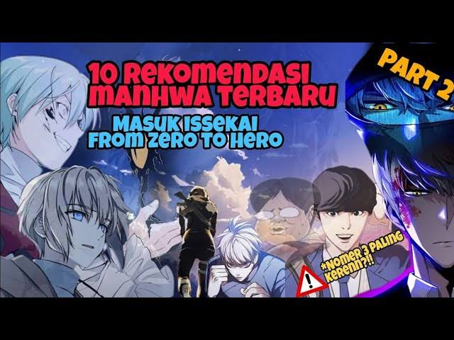
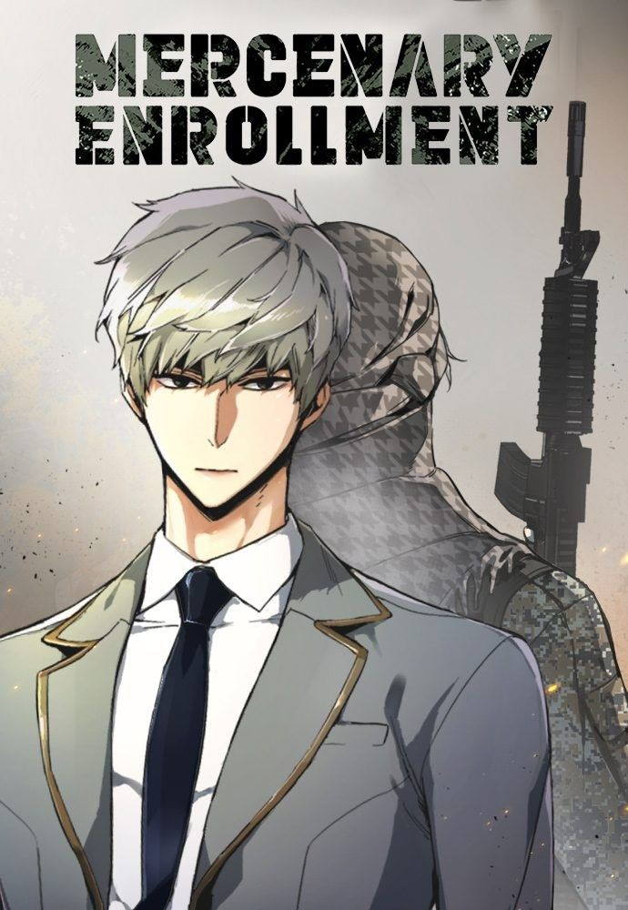
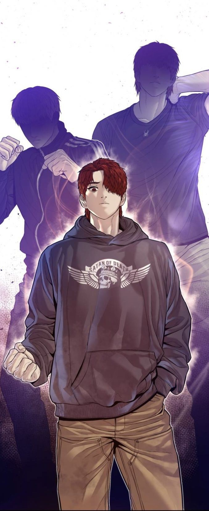
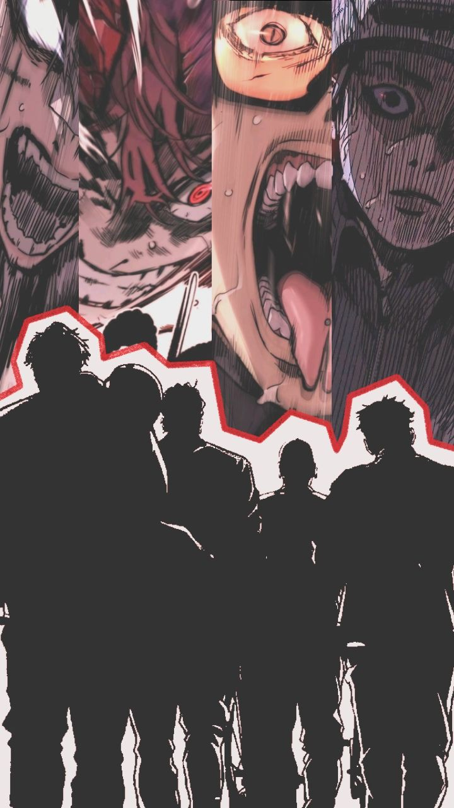
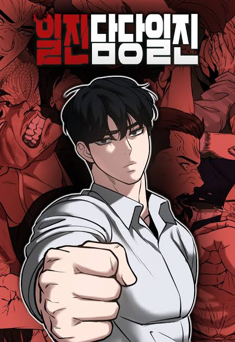

By M.ABILNUR
Kumpulan komik manhwa

orang semakin tertarik membaca manhwa akhir akhir ini di sebabkan beberapa faktor diantaranya adalah dikarenakan kualitas gambar dan visual yang sangat memuaskan mata para pembaca
manhwa memiliki gaya seni yang detail dan visual yang memikat.
dengan alur cerita yang menarik real life dengan kehidupan sehari hari.
Berikut 5 rekomendasi manhwa Action:
No 1. MERCENARY ENROLLMENT

Menceritaka kisah seorang anak yang bernama yu ijin dia mengalami kecelakaan pesawat da satu satunya yang selamt dan dia harus bertahan hidup dengan cara menjadi tentara bayaran selama 10 tahun, dan akhirnya dia kembali keluarganya yang tersisa.
No.2 WEAK HERO

Setelah penindasan mengargetka anda, permainan berakhir. Sekolah ini dijalankan oleh tiran yang hobi favoritnya menyiksa anak anak terlemah di kelas. Tapi kemudian gray tiba.
mahasiswa baru ini mengancam akan membongkar tatanan yang sudh ada. Dia mungki bertubuh kecil, tetapi pertarunganya yang kalkulatip dan brutal membuat lawan tidak berkutik.
No.3 JUVENILE OFFENDER

menceritakan dimana hukum korea selatan yang seperti sampah, Anak muda yang dipaksa menerima hukuman yang tidak dia perbuat.aku akan membalas dendam.
No.4 WIND BREAKER

Jay adalah presiden sswa SMA Sunny. Dia tidak hanya seorang siswa yang cerdas tetapi seorang pengendara sepeda yang memiliki teknik tingkat tinggi.
saat anda mengikuti sepedanya, Anda akan bertemu dengan teman ,cinta dan petualangannya. Bertemu dengan para monster yang juga memiliki kemmpuan sepeda yang luar biasa.
No.5 THE BULLY IN CHARGE

Setelah selesai sekolah, Kwon Daegun sedang mempersiapkan ujian kualifikasinya. Saat bekerja paruh waktu di sebuah toko serba ada,Dia berkelahi dengan beberapa permainanDaegun dengan mudah mengalahkan mereka.
dia ditawari sebuh proyek yang disebut"ijin in chage/The Bully In Charge" oleh Educational Foundation, yang telah mengawasinya sejak lama. dan dia menerimanya.